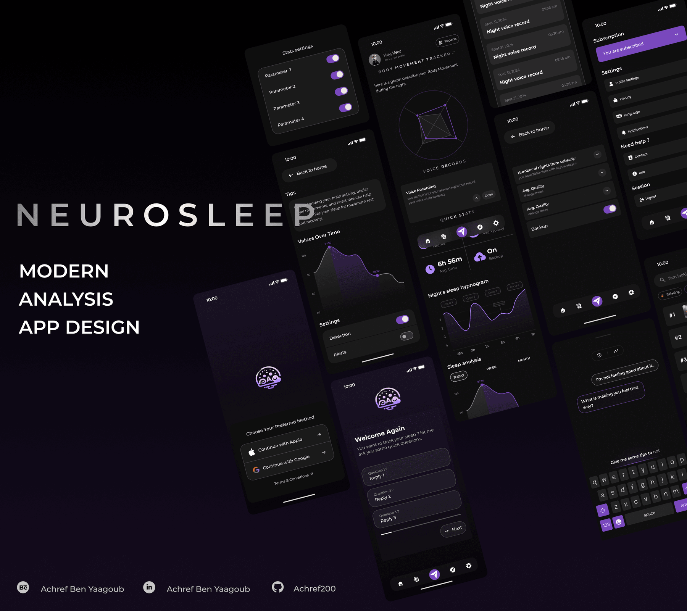

Mobile UI/UX · Data visualisation · 2024
NeuroSleep
A sleep-analysis app built around a hard problem: showing clinical-grade data — hypnograms, body-movement radar, voice records — without making a tired user feel audited. I built a dark, low-glare theme with a single violet accent so charts carry the meaning and the chrome disappears.